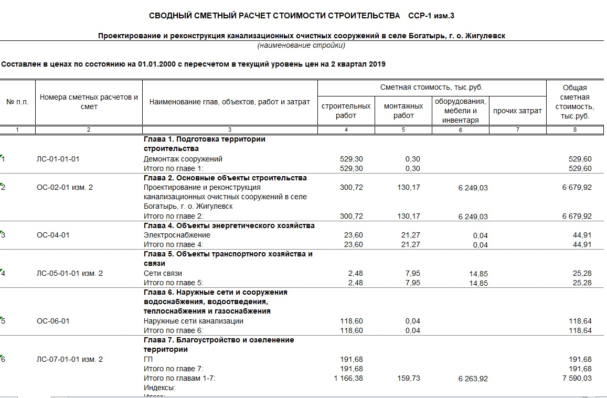

Сводный сметный расчет

Разработка сводного сметного расчета (ССРСС) стоимости строительства производится для объекта строительства или его этапа. В качестве основы используются итоговые стоимостные показатели, полученные из объектных или локальных сметных расчётов, а также сметные расчеты, касающиеся отдельных видов затрат. Может применяться как ко всему объекту строительства или, по инициативе заказчика, может быть разделен на этапы, в таком случае ему присваивается номер этапа.

При строительстве производственных и жилищно-гражданских объектов ССР делится на следующие главы:
1. «Подготовка территории строительства»
Включает затраты на очистку территории, геодезические работы, организацию подъездных путей, планировку территории и другие подготовительные работы.
2. «Основные объекты строительства»
Затраты на возведение главных объектов проекта: жилых домов, производственных зданий и т. д., включая работы по устройству фундаментов, конструкций, кровли, установке окон и дверей, внутренним отделочным работам.
3. «Объекты подсобного и обслуживающего назначения»
Затраты на строительство складов, мастерских, бытовок для рабочих и других вспомогательных сооружений.
4. «Объекты энергетического хозяйства»
Затраты на создание систем энергоснабжения: прокладку электрических кабелей, устройство систем отопления и горячего водоснабжения, монтаж оборудования для газораспределения и т. п.
5. «Объекты транспортного хозяйства и связи»
Затраты на организацию транспортной инфраструктуры и систем связи: строительство подъездных путей, парковочных мест, прокладку коммуникаций для связи.
6. «Наружные сети и сооружения водоснабжения, канализации, теплоснабжения и газоснабжения»
Затраты на прокладку водопроводных, канализационных, тепловых и газовых сетей, строительство колодцев, насосных станций и подключение сетей к центральным коммуникациям.
7. «Благоустройство и озеленение территории»
Затраты на укладку покрытий, установку уличного освещения, посадку растений, сооружение малых архитектурных форм и другие работы по благоустройству.
8. «Временные здания и сооружения»
Затраты на возведение временных складов, бытовок, дорог и других сооружений, необходимых на период строительства.
9. «Прочие работы и затраты»
Расходы, не вошедшие в предыдущие главы: транспортировка материалов, охрана площадки, утилизация мусора и дополнительные работы.
10. «Содержание дирекции (технического надзора) строящегося предприятия»
Расходы на содержание управленческого персонала и служб технического надзора, включая заработную плату и организацию их работы.
11. «Подготовка эксплуатационных кадров»
Затраты на обучение персонала для обслуживания объекта после строительства, разработку инструкций и методических материалов.
12. «Проектные и изыскательские работы, авторский надзор»
Расходы на разработку проектной документации, инженерные изыскания, авторский надзор и услуги проектных и изыскательских организаций.
ССР составляется на все строительство независимо от количества генподрядных организаций.
Рекомендуемый образец ССР стоимости строительства приведен в Приложении № 6 к Методике.